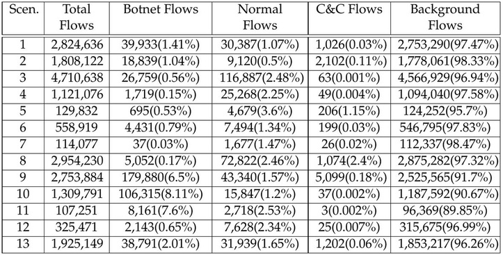

LogIsland is an event processing framework based on Kafka and Spark. The main goal of this Open Source platform is to abstract the level of complexity of complex event processing at scale. Of course many people start with an ELK stack, which is really great but not enough to elaborate a really complete system monitoring tool. So with LogIsland, you’ll move the log processing burden to a powerful distributed stack.
Kafka acts a the distributed message queue middleware while Spark is the core of the distributed processing. LogIsland glue those technologies to simplify log complex event processing at scale.
The main goal of LogIsland framework is to provide tools to automatically extract valuable knowledge from historical log data. To do so we need two different kind of processing over our technical stack :
What we know about Log/Event properties :
LogIsland is an event mining scalable platform designed to handle a high throughput of events.
Here is an example of a typical event mining pipeline.
The Malware Capture Facility Project is an effort from the Czech Technical University ATG Group for capturing, analyzing and publishing real and long-lived malware traffic.
http://mcfp.weebly.com/analysis
The goals of the project are:
The topology used in the project was designed to be as simple as possible. It uses VirtualBox to execute Windows virtual machines on Linux Hosts. The only two restrictions applied to the traffic are a bandwidth control to prevent DDoS and a redirection of all the SMTP traffic to prevent SPAM sending. More details can be found on the Topology page.
The complete dataset is published and can be downloaded from the Dataset menu. The published files include:
If you find this project or the dataset useful please consider collaborating with it. Among the things that need more attention are a better labeling, more screenshots of the traffic and information about which malware it really is. Feel free to send an email to sebastian.garcia@agents.fel.cvut.cz.
This dataset is directly feeding the CTU efforts for modelling and detecting botnets behavior on the network. As such, the Botnet Analysis blog page includes some analysis of their behaviors.
browse all public datasets https://mcfp.felk.cvut.cz/publicDatasets/
The CTU-13 is a dataset of botnet traffic that was captured in the CTU University, Czech Republic, in 2011. The goal of the dataset was to have a large capture of real botnet traffic mixed with normal traffic and background traffic. The CTU-13 dataset consists in thirteen captures (called scenarios) of different botnet samples. On each scenario we executed a specific malware, which used several protocols and performed different actions.
Table 2 shows the characteristics of the botnet scenarios.
Each scenario was captured in a pcap file that contains all the packets of the three types of traffic. These pcap files were processed to obtain other type of information, such as NetFlows, WebLogs, etc. The first analysis of the CTU-13 dataset, that was described and published in the paper “An empirical comparison of botnet detection methods” (see Citation below) used unidirectional NetFlows to represent the traffic and to assign the labels. These unidirectional NetFlows should not be used because they were outperformed by our second analysis of the dataset, which used bidirectional NetFlows. The bidirectional NetFlows have several advantages over the directional ones. First, they solve the issue of differentiating between the client and the server, second they include more information and third they include much more detailed labels. The second analysis of the dataset with the bidirectional NetFlows is the one published here.
The relationship between the duration of the scenario, the number of packets, the number of NetFlows and the size of the pcap file is shown in Table 3. This Table also shows the malware used to create the capture, and the number of infected computers on each scenario.
Table 3. Amount of data on each botnet scenario
The distinctive characteristic of the CTU-13 dataset is that we manually analyzed and label each scenario. The labeling process was done inside the NetFlows files. Table 4 shows the relationship between the number of labels for the Background, Botnet, C&C Channels and Normal on each scenario.
!(Table 4. Distribution of labels in the NetFlows for each scenario in the dataset. 
wget https://mcfp.felk.cvut.cz/publicDatasets/CTU-Malware-Capture-Botnet-42/detailed-bidirectional-flow-labels/capture20110810.binetflow
Please note that the labels of the flows generated by the malware start with “From-Botnet”. The labels “To-Botnet” are flows sent to the botnet by unknown computers, so they should not be considered malicious perse. Also for the normal computers, the counts are for the labels “From-Normal”. The labels “To-Normal” are flows sent to the botnet by unknown computers, so they should not be considered malicious perse.
Wed ago 10 15:58:00 CEST 2011
Today we capture the neris bot along with the packets of the whole CTU department. We used an XP virtualbox machine with the 147.32.84.165 public ip address. The first hour of capture was only background and latter we run the malware until 5 minutes before ending. We limited the bandwith of the experiment to 20kbps in the output of the bot.
The bot sent spam, connected to an HTTP CC, and use HTTP to do some ClickFraud.
LogIsland is packaged as a Docker container that you can build yourself or pull from Docker Hub. The docker container is built from a Centos 6.4 image with the following tools enabled (among others)
Let’s setup the env by
Pull the image from Docker Repository (it may take some time)
docker pull hurence/logisland-jdev
You should be aware that this Docker container is quite eager in RAM and will need at least 8G of memory to run smoothly.
Now run the container
# run container
docker run \
-it \
-p 80:80 \
-p 8080:8080 \
-p 2055:2055 \
-p 3000:3000 \
-p 9200-9300:9200-9300 \
-p 5601:5601 \
-p 2181:2181 \
-p 9092:9092 \
-p 9000:9000 \
-p 4050-4060:4050-4060 \
--name logisland-jdev \
-h sandbox \
hurence/logisland-jdev bash
# get container ip
docker inspect logisland-jdev
# or if your are on mac os
docker-machine ip default
you should add an entry for sandbox (with the container ip) in your /etc/hosts as it will be easier to access to all web services in logisland running container.
If you have your own Spark and Kafka cluster, you can download the latest release and unzip on an edge node.
Retrieve one part of the dataset (should be already done in Docker image)
cd /tmp;
wget https://github.com/Hurence/logisland-flow-analytics-ml-jobs/releases/download/v0.1/capture20110810.binetflow.tgz;
tar xzf capture20110810.binetflow.tgz;
rm -f capture20110810.binetflow.tgz
init repository (should be already done in Docker image)
cd /usr/local
git clone https://github.com/Hurence/logisland-flow-analytics-ml-jobs.git;
mvn compile assembly:single
cp target/logisland-flow-analytics-ml-jobs-0.10.1.jar /usr/local/logisland/lib
A logisland job define some stream processing pipeline inside a simple yaml configuration file.
The first job can be found in conf/index-binetflow.yml configuration file defines a stream processing job for indexing events to elasticsearch.
The first section configures the Spark engine (we will use a KafkaStreamProcessingEngine). A few notes about the most important parameters :
Here is the beginning of the conf file :
version: 0.10
documentation: LogIsland analytics main config file. Put here every engine or component config
engine:
component: com.hurence.logisland.engine.spark.KafkaStreamProcessingEngine
type: engine
documentation: Index some apache logs with logisland
configuration:
spark.app.name: IndexBiNetflowDemo
spark.master: local[*]
spark.driver.memory: 1G
spark.driver.cores: 1
spark.executor.memory: 1G
spark.executor.instances: 4
spark.executor.cores: 2
spark.task.maxFailures: 8
spark.serializer: org.apache.spark.serializer.KryoSerializer
spark.streaming.batchDuration: 10000
spark.streaming.backpressure.enabled: false
spark.streaming.unpersist: false
spark.streaming.blockInterval: 500
spark.streaming.kafka.maxRatePerPartition: 3000
spark.streaming.timeout: -1
spark.streaming.unpersist: false
spark.streaming.kafka.maxRetries: 30
spark.streaming.ui.retainedBatches: 200
spark.streaming.receiver.writeAheadLog.enable: false
spark.ui.port: 4050
the following part of the configuration defines an Elasticsearch service that will be used later in the BulkAddElasticsearch processor. We define here elasticsearch hosts: sandbox:9300, the cluster.name: elasticsearch and the batch.size: 5000.
controllerServiceConfigurations:
- controllerService: elasticsearch_service
component: com.hurence.logisland.service.elasticsearch.Elasticsearch_5_4_0_ClientService
type: service
documentation: elasticsearch 5.4.0 service implementation
configuration:
hosts: sandbox:9300
cluster.name: elasticsearch
batch.size: 5000
The next part defines the stream itself which is made of 3 main topics list : one for input records, one for output records and one for errors. Each of them having a serialization class. Please note that here kafka.input.topics.serializer is set to com.hurence.logisland.serializer.KryoSerializer because the input topic binetflow_events contains Kryo serialized records that will be produced by another job.
streamConfigurations:
- stream: indexing_stream
component: com.hurence.logisland.stream.spark.KafkaRecordStreamParallelProcessing
type: stream
documentation: a processor that links
configuration:
kafka.input.topics: binetflow_events
kafka.output.topics: none
kafka.error.topics: _errors
kafka.input.topics.serializer: com.hurence.logisland.serializer.KryoSerializer
kafka.output.topics.serializer: none
kafka.error.topics.serializer: com.hurence.logisland.serializer.JsonSerializer
kafka.metadata.broker.list: sandbox:9092
kafka.zookeeper.quorum: sandbox:2181
kafka.topic.autoCreate: true
kafka.topic.default.partitions: 8
kafka.topic.default.replicationFactor: 1
The final part of the strem configuration is the pipeline of Processor that will process the incoming Records. Here we simply use a BulkAddElasticsearch which will send incoming Records to Elasticsearch via the injected elasticsearch.client.service. Note that we provide both default.index: ctu-13 and default.type: bi_netflow for elasticsearch documents but these settings can be overided by come fields in the Record itself, es.index.field: search_index and es.type.field: record_type.
processorConfigurations:
- processor: es_publisher
component: com.hurence.logisland.processor.elasticsearch.BulkAddElasticsearch
type: processor
documentation: A processor that pushes Bro events into ES
configuration:
elasticsearch.client.service: elasticsearch_service
default.index: ctu-13
default.type: bi_netflow
timebased.index: no
es.index.field: search_index
es.type.field: record_type
The second job can be found in conf/parse-binetflow.yml configuration file defines a stream processing job to parse incoming netflow records.
After Engine definition the Stream says that Records will be read from kafka.input.topics: binetflow_raw, processed and sent to kafka.output.topics: binetflow_events
streamConfigurations:
- stream: parsing_stream
component: com.hurence.logisland.stream.spark.KafkaRecordStreamParallelProcessing
type: stream
documentation: a processor that links
configuration:
kafka.input.topics: binetflow_raw
kafka.output.topics: binetflow_events
kafka.error.topics: _errors
kafka.input.topics.serializer: none
kafka.output.topics.serializer: com.hurence.logisland.serializer.KryoSerializer
kafka.error.topics.serializer: com.hurence.logisland.serializer.JsonSerializer
kafka.metadata.broker.list: sandbox:9092
kafka.zookeeper.quorum: sandbox:2181
kafka.topic.autoCreate: true
kafka.topic.default.partitions: 8
kafka.topic.default.replicationFactor: 1
kafka.message.key.field: record_id
processorConfigurations:
The pipeline of processor will start the processing chain by a SplitText regexp processor which one will split all incoming lines accordingly to value.regex field, each matching group identified by the value.fields parameter, producing the following record from the line above 2011/08/10 15:54:07.366830,0.002618,udp,93.79.39.15,10520, <->,147.32.84.229,13363,CON,0,0,2,520,460,flow=Background-UDP-Established
{
"@timestamp": "2011-08-10T13:54:07Z",
"bytes_in": 460,
"bytes_out": 520,
"dest_ip": "147.32.84.229",
"dest_port": "13363",
"dest_tos": 0,
"direction": " <->",
"duration": 0.002618,
"label": "Background-UDP-Established",
"packets_out": 2,
"protocol": "udp",
"record_id": "1312984447366-93.79.39.15-147.32.84.229",
"record_raw_value": "2011/08/10 15:54:07.366830,0.002618,udp,93.79.39.15,10520, <->,147.32.84.229,13363,CON,0,0,2,520,460,flow=Background-UDP-Established",
"record_time": 1312984447366,
"record_type": "bi_netflow",
"src_ip": "93.79.39.15",
"src_port": "10520",
"src_tos": 0,
"state": "CON",
"timestamp": "2011/08/10 15:54:07.366830"
}
here is the conf :
- processor: bi_netflow_parser
component: com.hurence.logisland.processor.SplitText
type: parser
documentation: a parser that produce events from bi-directionnal netflow logs
configuration:
record.type: bi_netflow
value.regex: (\d{4}\/\d{2}\/\d{2}\s\d{1,2}:\d{1,2}:\d{1,2}\.\d{0,6}),([^,]+)?,([^,]+)?,([^,]+)?,([^,]+)?,([^,]+)?,([^,]+)?,([^,]+)?,([^,]+)?,([^,]+)?,([^,]+)?,([^,]+)?,([^,]+)?,([^,]+)?,flow=([^,]+)
value.fields: timestamp,duration,protocol,src_ip,src_port,direction,dest_ip,dest_port,state,src_tos,dest_tos,packets_out,bytes_out,bytes_in,label
convert | them to the desired types with ConvertFieldsType
- processor: field_types_converter
component: com.hurence.logisland.processor.ConvertFieldsType
type: processor
documentation: convert some field to a given type
configuration:
bytes_in: long
bytes_out: long
packets_out: long
duration: float
src_tos: int
dest_tos: int
The date of the Netflow file is converted with a custom Java Processor UpdateBiNetflowDate
- processor: date_updater
component: com.hurence.logisland.processor.UpdateBiNetflowDate
type: processor
documentation: compute record_time
Here is the java code of the date updater. this component is built in an external jar module which has to be copied into $LOGISLAND_HOME/lib folder
package com.hurence.logisland.processor;
import com.hurence.logisland.annotation.documentation.CapabilityDescription;
import com.hurence.logisland.annotation.documentation.Tags;
import com.hurence.logisland.component.PropertyDescriptor;
import com.hurence.logisland.logging.ComponentLog;
import com.hurence.logisland.logging.StandardComponentLogger;
import com.hurence.logisland.record.FieldDictionary;
import com.hurence.logisland.record.FieldType;
import com.hurence.logisland.record.Record;
import java.text.SimpleDateFormat;
import java.util.*;
@Tags({"record", "fields", "post-process", "binetflow", "date"})
@CapabilityDescription("Post processing step to update a dte field in a custom way")
public class UpdateBiNetflowDate extends AbstractProcessor {
private final ComponentLog logger = new StandardComponentLogger("UpdateBiNetflowDate", this);
@Override
public Collection<Record> process(ProcessContext context, Collection<Record> records) {
SimpleDateFormat sdf = new SimpleDateFormat("yyyy/MM/dd HH:mm:ss.S");
sdf.setTimeZone(TimeZone.getTimeZone("GMT+1"));
for (Record outputRecord : records) {
try {
String eventTimeString = outputRecord.getField("timestamp").asString();
Date eventDate = sdf.parse(eventTimeString.substring(0, eventTimeString.length() - 3));
if (eventDate != null) {
outputRecord.setField(FieldDictionary.RECORD_TIME, FieldType.LONG, eventDate.getTime() - 60 * 60 * 1000);
}
} catch (Exception e) {
String error = "error parsing in record: " + outputRecord + ", " + e.toString();
outputRecord.addError("unable to parse date", logger, error);
}
}
return records;
}
@Override
public List<PropertyDescriptor> getSupportedPropertyDescriptors() {
return Collections.emptyList();
}
}
Lastly, in order to make the processing idempotent, we modify the Record id according to the pattern <record_time>-<src_ip>-<dest_ip>
- processor: id_modifier
component: com.hurence.logisland.processor.ModifyId
type: processor
documentation: convert some field to a given type
configuration:
id.generation.strategy: fromFields
fields.to.hash: record_time,src_ip,dest_ip
java.formatter.string: "%s-%s-%s"
create the index into Elasticsearch
# send mapping
curl -XPUT http://sandbox:9200/ctu-13 -d @conf/ctu-13-mapping.json
# verify that the index is correct
curl -XGET http://sandbox:9200/ctu-13?pretty=1
Start a logisland job that will index incoming records
cd /usr/local/logisland
bin/logisland.sh --conf /usr/local/logisland-flow-analytics-ml-jobs/conf/index-binetflow.yml
Start a logisland job that will parse incoming bidirectionnal netflow events.
cd /usr/local/logisland
bin/logisland.sh --conf /usr/local/logisland-flow-analytics-ml-jobs/conf/parse-binetflow.yml
send some records to Logisland through Kafka topic with kafkacat
cat /tmp/capture20110810.binetflow | kafkacat -b sandbox:9092 -t binetflow_raw
find all botnet events in elasticsearch
curl -XGET http://sandbox:9200/ctu-13/_search?pretty=1&q=Botnet
Checkout spark streaming application in your browser at http://sandbox:4050
drill down to a batch detail
drill down to a stage detail
then click on Discover and adjust absolute time range filter (top right) from 2011-08-10 09:00:00.000 to 2011-08-10 18:00:00.000
enter Botnet in the search bar to search only Botnet flows. click on some fields to see Quick counts
In this lab will show how to experiment some Machine Learning on a labeled dataset with both Logisland and Spark MLLib. We will make a small Spark job which will use some of the Logisland processors that we have already been using in conjonction with a cyber-security plugin called botsearch.
botsearch tries to detects malware infections in network traffic by comparing statistical features of the traffic to previously-observed bot activity. Therefore, botsearch operates in two phases: a training phase and a detection phase.
During the training phase, botsearch learns the statistical properties that are characteristic of the command and control traffic of different bot families. Then, it uses these statistical properties to create models that can identify similar traffic. In the detection phase, the models are applied to the traffic under investigation. This allows botsearch to identify potential bot infections in the network, even when the bots use encrypted C&C communication.
First, we need to obtain input for our system. In the training phase, this input is generated by executing malware samples in a controlled environment and capturing the traffic that these samples produce. In the second step, we reassemble the flows in the captured traffic; a step that can be omitted when NetFlow data is used instead of full packet captures. In the third step, we aggregate the flows in traces – chronologically-ordered sequences of connections between two IP addresses on a given destination port. botsearch then extracts five statistical features for each trace in the forth step. These statistical features are :
The latter allows us to identify underlying frequencies of communication that might not be captured by using simple averages.
Finally, in the fifth step, botsearch leverages the aforementioned features to build models. During model creation, botsearch clusters the observed feature values. Each feature is treated separately to reflect the fact that we did not always observe correlations between features: For example, a malware family might exhibit similar periodicity between their C&C communications, but each connection transmits a very different number of bytes. The combination of multiple clusters for each of a bot’s features produces the final malware family model.
This app has been written in Java, it would have been mush simpler in Scala... We first need a spark context :
// Initialize Spark configuration & context
String appName = "KMeansClustering";
SparkConf sparkConf = new SparkConf()
.setAppName(appName)
.setMaster("local[*]")
.set("spark.executor.memory", "3g");
JavaSparkContext sc = new JavaSparkContext(sparkConf);
We read data file from file system and return it as RDD of strings:
JavaRDD<String> linesRDD = sc.textFile(inputPathFile);
the we initialize 2 logisland processors that has previously been used in parsing job. One to split the string according to regexp groups, the other to adjust the business date.
// Split Text Processor :
Processor splitTextProcessor = new SplitText();
StandardProcessContext splitTextContext = new StandardProcessContext(splitTextProcessor, "splitTextProcessor");
splitTextContext.setProperty("value.fields", "timestamp,duration,protocol,src_ip,src_port,direction,dest_ip,dest_port,state,src_tos,dest_tos,packets_out,bytes_out,bytes_in,label");
splitTextContext.setProperty("value.regex", "(\\d{4}\\/\\d{2}\\/\\d{2}\\s\\d{1,2}:\\d{1,2}:\\d{1,2}\\.\\d{0,6}),([^,]+)?,([^,]+)?,([^,]+)?,([^,]+)?,([^,]+)?,([^,]+)?,([^,]+)?,([^,]+)?,([^,]+)?,([^,]+)?,([^,]+)?,([^,]+)?,([^,]+)?,flow=([^,]+)");
// BiNetFlow Processor :
Processor updateBiNetflowDate = new UpdateBiNetflowDate();
StandardProcessContext updateBiNetflowDateContext = new StandardProcessContext(updateBiNetflowDate, "updateBiNetflowDate");
We then use those 2 Logisland Processors to create a distributed dataset of netflow Records. This step will produce a distributed collection of (String, Record) tupples. The key of the tupple is a string formed with <src_ip>_<dest_ip> and the value is the netflow Record itself
PairFunction<String, String, Record> mapFunction = new PairFunction<String, String, Record>() {
public Tuple2<String, Record> call(String line) {
Record r = RecordUtils.getKeyValueRecord("", line);
List<Record> list = new ArrayList<>();
list.add(r);
Collection<Record> tempRecords = splitTextProcessor.process(splitTextContext, list);
Collection<Record> records = updateBiNetflowDate.process(updateBiNetflowDateContext, tempRecords);
try {
Record record = records.iterator().next();
String ipSource = record.getField("src_ip").asString();
String ipTarget = record.getField("dest_ip").asString();
return new Tuple2<>(ipSource + "_" + ipTarget, record);
} catch (Exception ex) {
return new Tuple2<>("unknown", null);
}
}
};
JavaPairRDD<String, Record> flowsRDD = linesRDD.mapToPair(mapFunction);
then comes the major step, the trace computation. We will first group all the records by key. convert them to HttpFlow, sort them by date and compute the traces.
The trace computation algorithm can be describe by the following steps :
Here is the code :
JavaPairRDD<String, NetworkTrace> traces = flowsRDD
.groupByKey()
.map(t -> {
Trace trace = new Trace();
try {
Iterable<Record> flowRecords = t._2;
String[] tokens = t._1.split("_");
trace.setIpSource(tokens[0]);
trace.setIpTarget(tokens[1]);
// set up the flows buffer
ArrayList<HttpFlow> flows = new ArrayList<>();
flowRecords.forEach(flowRecord -> {
HttpFlow flow = new HttpFlow();
flow.setDate(new java.util.Date(flowRecord.getField("record_time").asLong()));
flow.setipSource(flowRecord.getField("src_ip").asString());
flow.setIpTarget(flowRecord.getField("dest_ip").asString());
flow.setRequestSize(flowRecord.getField("bytes_in").asLong());
flow.setResponseSize(flowRecord.getField("bytes_out").asLong());
flows.add(flow);
});
// we need at least 5 flows to compute one trace
if (flows.size() > 5) {
// flows need to be sorted on timestamp
flows.sort(new Comparator<HttpFlow>() {
@Override
public int compare(HttpFlow flow2, HttpFlow flow1) {
return flow1.getDate().compareTo(flow2.getDate());
}
});
flows.forEach(trace::add);
// compute trace frequencies and stats
trace.compute();
}
} catch (Exception ignored) {
}
return trace;
})
.mapToPair(trace -> new Tuple2<String, NetworkTrace>(
trace.getIpSource() + "_" + trace.getIpTarget(),
new NetworkTrace(
trace.getIpSource(),
trace.getIpTarget(),
(float) trace.getAvgUploadedBytes(),
(float) trace.getAvgDownloadedBytes(),
(float) trace.getAvgTimeBetweenTwoFLows(),
(float) trace.getMostSignificantFrequency(),
trace.getFlows().size(),
"",
0)))
.cache();
Now we’ll go into the vectorization of the traces, and transform them into a dense 4 dimensions vector
// Convert traces into a Dense vector
JavaRDD<Tuple2<String, Vector>> tracesTuple = traces.map(t -> {
double[] values = new double[4];
values[0] = t._2.avgUploadedBytes();
values[1] = t._2.avgDownloadedBytes();
values[2] = t._2.avgTimeBetweenTwoFLows();
values[3] = t._2.mostSignificantFrequency();
return new Tuple2<>(t._1, Vectors.dense(values));
}).cache();
Don’t forget to scale the vector to get mean = 0 and std = 1 elsewhere you’ll get a pretty huge bias as we will compare carots and cauliflowers.
StandardScaler scaler = new StandardScaler(true, true);
RDD<Vector> tracesVector = tracesTuple.map(tv -> tv._2).rdd();
StandardScalerModel scalerModel = scaler.fit(tracesVector);
JavaRDD<Tuple2<String, Vector>> scaledTraces = tracesTuple.map(x -> new Tuple2<>(x._1, scalerModel.transform(x._2)));
Now that we have some well formed scaled vectors of features, we can run K-means clustering to segment our traces.
// Cluster the data into two classes using KMeans k:$nbClusters, nbIterations:$nbIterations
KMeansModel clusters = KMeans.train(scaledTraces.map(x -> x._2).rdd(), nbClusters, nbIterations);
// Display cluster centers :
displayClustersCenters(clusters);
At this step, we have computed a kmeans model, made of 4-dimension centroids. And we can assign a clusterId to each trace. And finally we send the whole traces to Kafka, on the same topic as the previous stream, so that the logisland indexing stream can also handle theses trace events too.
// Assign traces to clusters
JavaPairRDD<String, Integer> centroids = scaledTraces.mapToPair(t -> new Tuple2<>(t._1, clusters.predict(t._2)));
// Assign centroidId to traces
centroids.join(traces, 8).foreachPartition(it -> {
//Configure the Producer
Properties configProperties = new Properties();
configProperties.put(ProducerConfig.BOOTSTRAP_SERVERS_CONFIG, "sandbox:9092");
configProperties.put(ProducerConfig.KEY_SERIALIZER_CLASS_CONFIG, "org.apache.kafka.common.serialization.ByteArraySerializer");
configProperties.put(ProducerConfig.VALUE_SERIALIZER_CLASS_CONFIG, "org.apache.kafka.common.serialization.ByteArraySerializer");
Producer producer = new KafkaProducer(configProperties);
it.forEachRemaining( t -> {
String traceId = t._1();
int centroidId = t._2()._1();
NetworkTrace trace = t._2()._2();
Record record = new StandardRecord("botsearch_trace")
.setStringField("search_index", "ctu-13")
.setId(traceId)
.setField("centroid_id", FieldType.STRING, centroidId)
.setField("src_ip", FieldType.STRING, trace.ipSource())
.setField("dest_ip", FieldType.STRING, trace.ipTarget())
.setField("avg_uploaded_bytes", FieldType.FLOAT, trace.avgUploadedBytes())
.setField("avg_downloaded_bytes", FieldType.FLOAT, trace.avgDownloadedBytes())
.setField("avg_time_between_two_fLows", FieldType.FLOAT, trace.avgTimeBetweenTwoFLows())
.setField("most_significant_frequency", FieldType.FLOAT, trace.mostSignificantFrequency())
.setField("flows_count", FieldType.LONG, trace.flowsCount());
RecordSerializer serializer = new KryoSerializer(true);
ByteArrayOutputStream baos = new ByteArrayOutputStream();
serializer.serialize(baos, record);
ProducerRecord<byte[], byte[]> rec = new ProducerRecord<>("binetflow_events", traceId.getBytes(), baos.toByteArray());
producer.send(rec);
try {
baos.close();
} catch (IOException e) {
e.printStackTrace();
}
});
producer.close();
});
We will launch the clustering job with the /tmp/capture20110810.binetflow file and save the centroids in one file called /tmp/clusters.txt. Just start with 10 clusters and 10 iterations.
cd /usr/local/logisland-flow-analytics-ml-jobs
#mvn compile assembly:single
/usr/local/spark/bin/spark-submit --class com.hurence.logisland.jobs.KMeansClustering --driver-memory 8g target/logisland-flow-analytics-ml-jobs-0.10.1-jar-with-dependencies.jar -nbClusters 10 -nbIterations 10 -inputPath /tmp/capture20110810.binetflow -outputPath /tmp/clusters.txt
The resulting centroid should look like the following :
Cluster Center 0: [ 'Average uploaded bytes': -0.004762804352565624, 'Average downloaded bytes': -0.006434461345251199, 'Average time between two flows': 0.1714331420028378, 'Most Significant Frequency': -0.19472068689355237 ]
Cluster Center 1: [ 'Average uploaded bytes': 23.847880147671972, 'Average downloaded bytes': 388.6130233752165, 'Average time between two flows': -4.587405304268049, 'Most Significant Frequency': 2.180556475503876 ]
Cluster Center 2: [ 'Average uploaded bytes': 633.756107444736, 'Average downloaded bytes': 170.41500459257244, 'Average time between two flows': -1.2520176112615478, 'Most Significant Frequency': 5.488399613909684 ]
Cluster Center 3: [ 'Average uploaded bytes': 0.03249432630082737, 'Average downloaded bytes': 0.01976826657423998, 'Average time between two flows': -7.611985863898892, 'Most Significant Frequency': 3.6782110287686467 ]
Cluster Center 4: [ 'Average uploaded bytes': 0.04291827526782946, 'Average downloaded bytes': 0.031986211635606186, 'Average time between two flows': -1.070165821772272, 'Most Significant Frequency': 7.682881299532897 ]
Cluster Center 5: [ 'Average uploaded bytes': 0.08512160297573648, 'Average downloaded bytes': 0.14225052937437158, 'Average time between two flows': -1.1382353609756743, 'Most Significant Frequency': 3.366819813123287 ]
Cluster Center 6: [ 'Average uploaded bytes': 316.2511432025284, 'Average downloaded bytes': 121.52914874544881, 'Average time between two flows': -4.800965640138641, 'Most Significant Frequency': 3.500625104482574 ]
Cluster Center 7: [ 'Average uploaded bytes': 9.359717794125272, 'Average downloaded bytes': 101.44540188177837, 'Average time between two flows': -2.918521013590664, 'Most Significant Frequency': 2.663547817590244 ]
Cluster Center 8: [ 'Average uploaded bytes': 132.49639037888568, 'Average downloaded bytes': 43.85958413673529, 'Average time between two flows': -4.795757418834234, 'Most Significant Frequency': 4.001404480917403 ]
Cluster Center 9: [ 'Average uploaded bytes': 0.012003654687921273, 'Average downloaded bytes': 0.014284479381833907, 'Average time between two flows': -4.12222261451248, 'Most Significant Frequency': 4.311217671762223 ]
Try some visual analytics of thoses cluster. GO to Kibana and update the CTU-13 index parttern in the management section. Go in the discover section and look at the latest events (indexed during the latest 15’). Filter to keep only those which have more than 0 flow_count. Try to compare clusterId repartition for src_ip: 147.32.84.165 and other traces.